7 Regression Analysis
This analysis utilizes the The National Agricultural Statistics Service (NASS) Quick Stats data from an on-line database containing official published aggregate estimates related to U.S. agricultural production.
7.0.1 Weather Data Analysis
7.0.1.1 Load the PRISM daily maximum temperatures
## daily max temperature
## dimensions: counties x days x years
prism <- readMat("data/prismiowa.mat")
## look at county #1
t_1981_c1 <- prism$tmaxdaily.iowa[1,,1]
t_1981_c1[366]
plot(1:366, t_1981_c1, type = "l")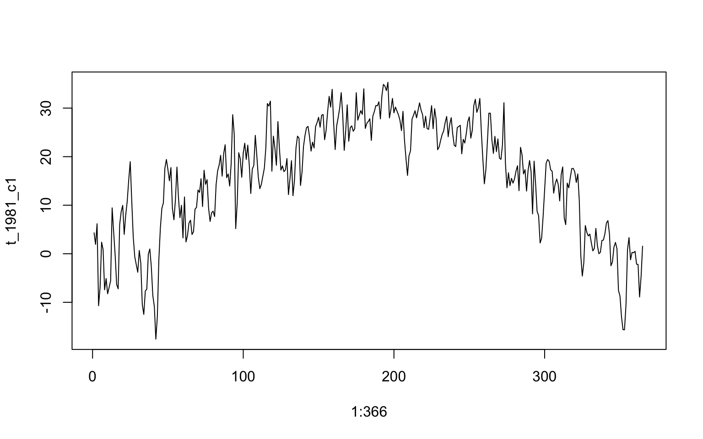
## plot temp by DOY
ggplot() +
geom_line(mapping = aes(x=1:366, y = t_1981_c1)) +
theme_bw() +
xlab("day of year") +
ylab("daily maximum temperature (°C)") +
ggtitle("Daily Maximum Temperature, Iowa County #1")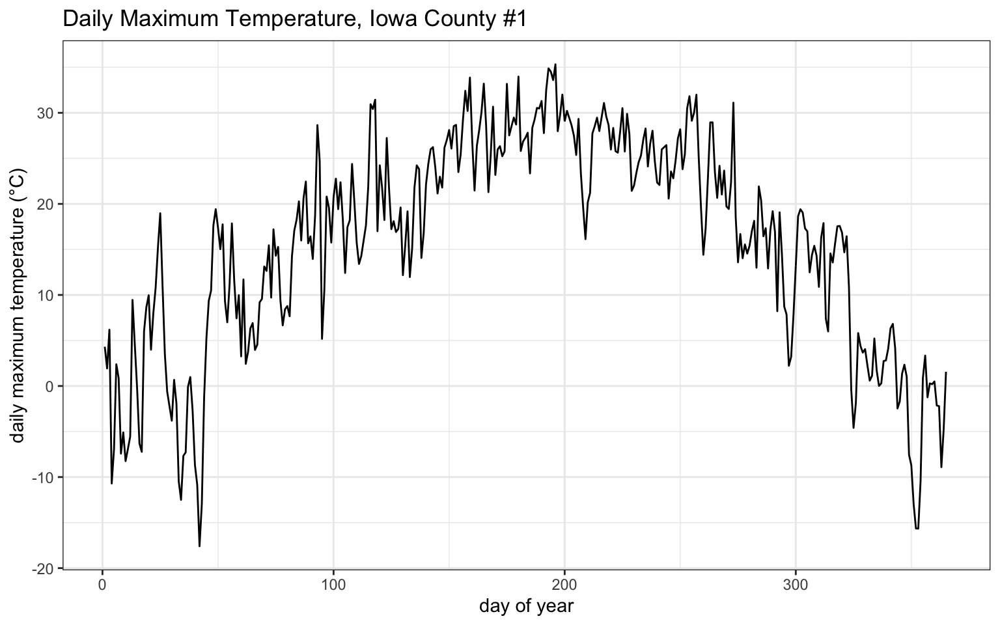
7.0.1.2 tidy weather data
## assign dimension names to tmax matrix
dimnames(prism$tmaxdaily.iowa) <- list(prism$COUNTYFP, 1:366, prism$years)
## converted 3d matrix into a data frame
tmaxdf <- as.data.frame.table(prism$tmaxdaily.iowa)
## relabel the columns
colnames(tmaxdf) <- c("countyfp","doy","year","tmax")
tmaxdf <- tibble(tmaxdf)7.0.2 Temperature trends
7.0.2.1 Summer temperature trends: Winneshiek County
## transform data types
tmaxdf$doy <- as.numeric(tmaxdf$doy)
tmaxdf$year <- as.numeric(as.character(tmaxdf$year))
## summarize summer temperature by year
winnesummer <- tmaxdf %>%
filter(countyfp==191 & doy >= 152 & doy <= 243) %>%
group_by(year) %>%
summarize(meantmax = mean(tmax))
## plot temp by year
ggplot(winnesummer, mapping = aes(x = year, y = meantmax)) +
geom_point() +
theme_bw() +
labs(x = "year", y = "Tmax (°C)") +
geom_smooth(method = lm)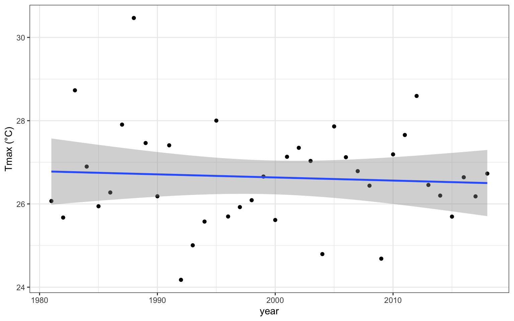
## simple linear regression of summer temp on year
lm_summertmax <- lm(meantmax ~ year, winnesummer)
summary(lm_summertmax)7.0.2.2 Winter Temperatures - Winneshiek County
## summarize winter temperature data by year
winnewinter <- tmaxdf %>%
filter(countyfp==191 & (doy <= 59 | doy >= 335) & !is.na(tmax)) %>%
group_by(year) %>%
summarize(meantmax = mean(tmax))
## plot yearly winter temperature
ggplot(winnewinter, mapping = aes(x = year, y = meantmax)) +
geom_point() +
theme_bw() +
labs(x = "year", y = "Tmax (°C)") +
geom_smooth(method = lm)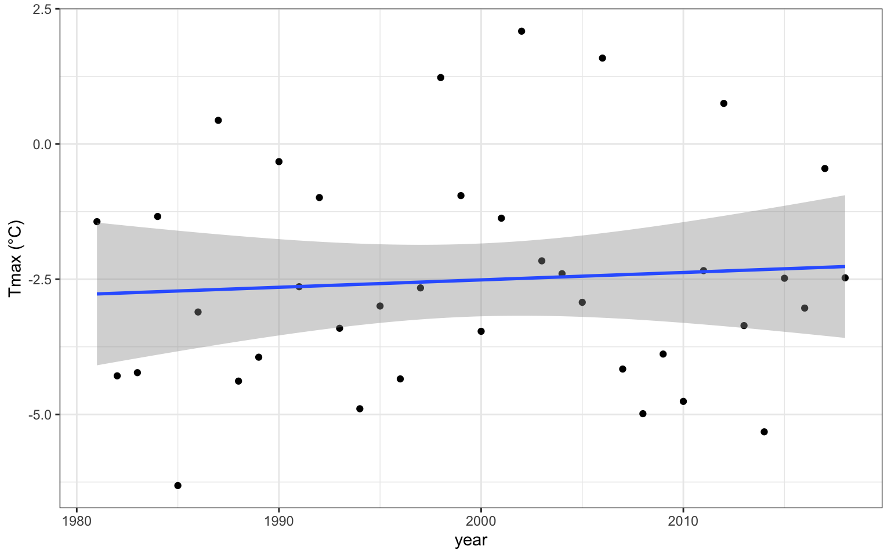
## simple linear regression of winter temp on year
lm_wintertmax <- lm(meantmax ~ year, winnewinter)
summary(lm_wintertmax)7.0.2.3 Multiple regression – Quadratic time trend
## create squared term of year
winnewinter$yearsq <- winnewinter$year^2
## quadratic regreassion of winter temp on year and year2
lm_wintertmaxquad <- lm(meantmax ~ year + yearsq, winnewinter)
summary(lm_wintertmaxquad)
## save fitted values
winnewinter$fitted <- lm_wintertmaxquad$fitted.values
## plot fitted values
ggplot(winnewinter) +
geom_point(mapping = aes(x = year, y = meantmax)) +
geom_line(mapping = aes(x = year, y = fitted)) +
theme_bw() +
labs(x = "year", y = "tmax")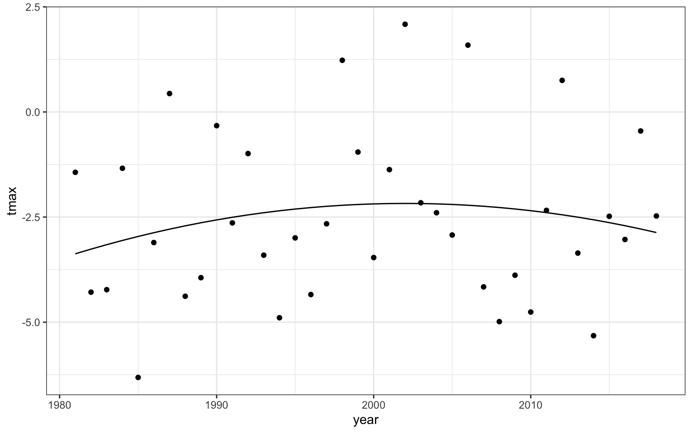
7.0.2.4 Download NASS corn yield data
The rnassqs package requires a unique access key which can be obtained here. After acquiring this key, define it in your code session as the variable my_qs_api_key.
## set our API key with NASS
nassqs_auth(key = my_qs_api_key)
## parameters to query on
params <- list(commodity_desc = "CORN", util_practice_desc = "GRAIN", prodn_practice_desc = "ALL PRODUCTION PRACTICES", year__GE = 1981, state_alpha = "IA")
## download
cornyieldsall <- nassqs_yields(params)
cornyieldsall$county_ansi <- as.numeric(cornyieldsall$county_ansi)
cornyieldsall$yield <- as.numeric(cornyieldsall$Value)
## clean and filter this dataset
cornyields <- select(cornyieldsall, county_ansi, county_name, yield, year) %>%
filter(!is.na(county_ansi) & !is.na(yield))
cornyields <- tibble(cornyields) %>%
rename(year_id = year
, yield_corn_bu_acre = yield ## bushels per acre
)7.0.3 Assignment
7.0.3.1 Question 1a
Extract Winneshiek County corn yields, fit a linear time trend, make a plot. Is there a significant time trend?
## ## check out yield data structure
## str(cornyields)
## nrow(cornyields)
## cornyields %>% distinct(county_ansi) %>% nrow(.)
## cornyields %>% distinct(county_ansi, year_id) %>% nrow(.)
## ## row is unique by county, year
## filter to specific county
winneshiek_yields <- cornyields %>%
filter(toupper(county_name) == "WINNESHIEK")
## trend model for yield growth
lm_yield_year <- lm(yield_corn_bu_acre ~ year_id , data = winneshiek_yields)
summary(lm_yield_year)$coefficients["(Intercept)", "Estimate"]
## label model in ggplot
model_label <- as.character(as.expression(
substitute(
italic(y) == a + b %.% italic(year)*","~~italic(r)^2~"="~r2
, list(
a = scales::comma(summary(lm_yield_year)$coefficients["(Intercept)", "Estimate"], accuracy = 0.1)
, b = scales::comma(summary(lm_yield_year)$coefficients[2, "Estimate"], accuracy = 0.1)
, r2 = format(summary(lm_yield_year)$r.squared, digits = 2)
)
)
))
## model_label
## plot
ggplot(winneshiek_yields, aes(x = year_id, y = yield_corn_bu_acre)) +
geom_point(alpha=0.8, color = "navy", size = 2) +
geom_smooth(method = 'lm', color = "grey35") +
annotate(geom = "text", label = model_label, parse = TRUE, x = -Inf, y = Inf, hjust = -0.1, vjust = 2) +
scale_x_continuous(breaks = scales::extended_breaks(n=10)) +
labs(
title = "Corn Yield over time in Winneshiek County, Iowa"
) +
xlab("Year") +
ylab("Corn Yield (bushels per acre)") +
theme_bw() +
theme(
legend.position="none"
)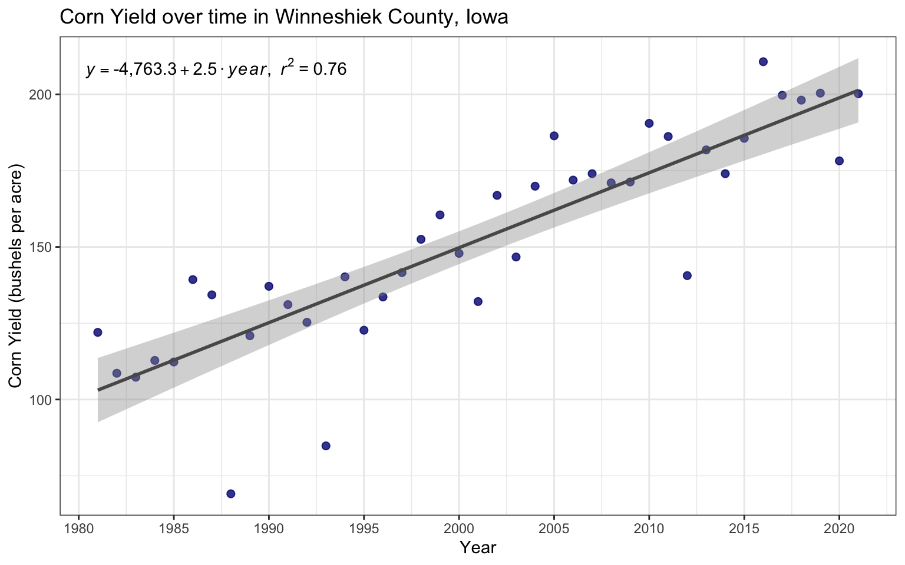
There is a significant time trend in the corn yields in Winneshiek County, Iowa from 1981 to 2021. Based on a simple linear regression, every additional year results in the corn yield increasing by 2.46 bu/acre. The annual time trend explains 76% of the variation in corn yields in Winneshiek County, Iowa.
7.0.3.2 Question 1b
Fit a quadratic time trend (i.e., year + year^2) and make a plot. Is there evidence for slowing yield growth?
## quadratic trend model for evidence of slowing yield growth
winneshiek_yields <- winneshiek_yields %>%
mutate(year_id_sq = year_id^2)
## run model
lm_yield_year_quad <- lm(yield_corn_bu_acre ~ year_id + year_id_sq, data = winneshiek_yields)
## summary(lm_yield_year_quad)
## save fitted values
winneshiek_yields$fitted_quad <- lm_yield_year_quad$fitted.values
## compare models
anova_m1_m2 <- anova(lm_yield_year, lm_yield_year_quad)
## anova_m1_m2[2, "Pr(>F)"]
## label model in ggplot
model_label_quad <- as.character(as.expression(
substitute(
italic(y) == a + b %.% italic(year) + c %.% ~italic(year)^2~","~~italic(r)^2~"="~r2
, list(
a = scales::comma(summary(lm_yield_year_quad)$coefficients["(Intercept)", "Estimate"], accuracy = 0.1)
, b = scales::comma(summary(lm_yield_year_quad)$coefficients[2, "Estimate"], accuracy = 0.2)
, c = scales::comma(summary(lm_yield_year_quad)$coefficients[3, "Estimate"], accuracy = 0.0001)
, r2 = format(summary(lm_yield_year_quad)$r.squared, digits = 2)
)
)
))
## model_label_quad
## plot
ggplot(winneshiek_yields, aes(x = year_id, y = yield_corn_bu_acre)) +
geom_point(alpha=0.8, color = "navy", size = 2) +
geom_line(aes(x = year_id, y = fitted_quad), color = "grey35") +
annotate(geom = "text", label = model_label_quad, parse = TRUE, x = -Inf, y = Inf, hjust = -0.1, vjust = 2) +
scale_x_continuous(breaks = scales::extended_breaks(n=10)) +
labs(
title = "Corn Yield over time in Winneshiek County, Iowa"
, subtitle = "with fitted values from quadratic time trend (i.e., year + year^2)"
) +
xlab("Year") +
ylab("Corn Yield (bushels per acre)") +
theme_bw() +
theme(
legend.position="none"
)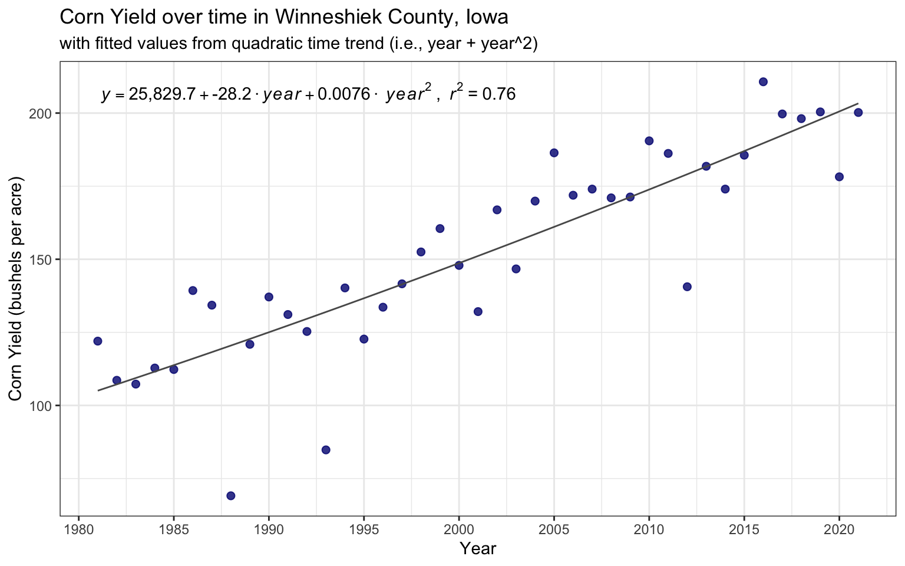
Using a quadratic time trend (i.e., year + year^2) shows a significant time trend in the corn yields in Winneshiek County, Iowa from 1981 to 2021. Based on a the quadratic model, there is a slightly increasing rate of corn yield over time. The quadratic time trend explains 76% of the variation in corn yields in Winneshiek County, Iowa. Using the anova() function to compare the quadratic model with the simple linear model allows for us to test which model provides the best parsimonious fit of the data. Although the quadratic model is significant, the ANOVA test has a resulting p-value of 0.723. This result means that adding the quadratic term did not significantly improve the model over the simple linear model.
7.0.3.3 Question 2
Time Series: Let’s analyze the relationship between temperature and yields for the Winneshiek County time series. Use data on yield and summer avg Tmax. Is adding year or Tmax^2 to your model helpful? Make a plot and interpret the results.
7.0.3.3.1 Yields on Temperature
#join summer temperature to yield data for Winneshiek County
winneshiek_yields_temp <- inner_join(winneshiek_yields, winnesummer, by = c("year_id"= "year"))
## yield on temperature
lm_yield_tmax <- lm(yield_corn_bu_acre ~ meantmax, data = winneshiek_yields_temp)
lm_yield_yr <- lm(yield_corn_bu_acre ~ year_id, data = winneshiek_yields_temp)
## summary(lm_yield_tmax)
## compare models
anova_m1_m3 <- anova(lm_yield_yr, lm_yield_tmax)
### plot
ggplot(winneshiek_yields_temp, aes(x = meantmax, y = yield_corn_bu_acre)) +
geom_point(alpha=0.8, color = "navy", size = 2) +
geom_smooth(method = 'lm', color = "grey35") +
scale_x_continuous(breaks = scales::extended_breaks(n=10)) +
labs(
title = "Corn Yield versus Mean Summer Max. Temperature in Winneshiek County, Iowa"
) +
xlab("Summer Max. Temp. (°C)") +
ylab("Corn Yield (bushels per acre)") +
theme_bw() +
theme(
legend.position="none"
)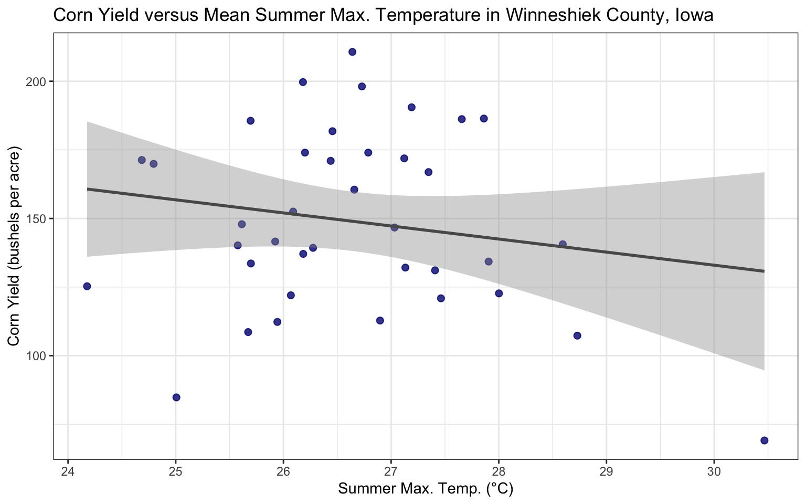
A simple linear regression of corn yield on mean summer maximum temperature shows that temperature alone explains 3% of the variation in corn yields in Winneshiek County, Iowa. This model performs worse than the simple time trend of annual corn yield investigated above.
7.0.3.3.2 Yields on Year & Temperature
## yield on temperature and year
lm_yield_year_tmax <- lm(yield_corn_bu_acre ~ year_id + meantmax, data = winneshiek_yields_temp)
## summary(lm_yield_year_tmax)
## compare models
anova_m1_m4 <- anova(lm_yield_yr, lm_yield_year_tmax)
anova_m1_m4## Analysis of Variance Table
##
## Model 1: yield_corn_bu_acre ~ year_id
## Model 2: yield_corn_bu_acre ~ year_id + meantmax
## Res.Df RSS Df Sum of Sq F Pr(>F)
## 1 36 10752
## 2 35 10192 1 560.03 1.9231 0.1743## linear function holding tmax constant at mean
lm_yield_year_tmax_eq1 <- function(x){summary(lm_yield_year_tmax)$coefficients["(Intercept)", "Estimate"] + (summary(lm_yield_year_tmax)$coefficients[2, "Estimate"] * x) + (summary(lm_yield_year_tmax)$coefficients[3, "Estimate"] * mean(winneshiek_yields_temp$meantmax))}
#label
model_label_yr_tmax <- as.character(as.expression(
substitute(
italic(y) == a + b %.% italic(year) + c %.% ~italic(tmax)~","~~italic(r)^2~"="~r2
, list(
a = scales::comma(summary(lm_yield_year_tmax)$coefficients["(Intercept)", "Estimate"], accuracy = 1)
, b = scales::comma(summary(lm_yield_year_tmax)$coefficients[2, "Estimate"], accuracy = 0.2)
, c = scales::comma(summary(lm_yield_year_tmax)$coefficients[3, "Estimate"], accuracy = 0.2)
, r2 = format(summary(lm_yield_year_tmax)$r.squared, digits = 2)
)
)
))
#plot
ggplot(winneshiek_yields_temp, aes(x = year_id, y = yield_corn_bu_acre)) +
geom_point(alpha=0.8, color = "navy", size = 2) +
stat_function(fun = lm_yield_year_tmax_eq1
, geom="line"
, show.legend = FALSE
, color = "grey35"
) +
annotate(geom = "text", label = model_label_yr_tmax, parse = TRUE, x = -Inf, y = Inf, hjust = -0.1, vjust = 2) +
scale_x_continuous(breaks = scales::extended_breaks(n=10)) +
labs(
title = "Corn Yield over time in Winneshiek County, Iowa"
, subtitle = "with fitted values of yield over time while holding max. temperature constat at mean"
) +
xlab("Year") +
ylab("Corn Yield (bushels per acre)") +
theme_bw() +
theme(
legend.position="none"
)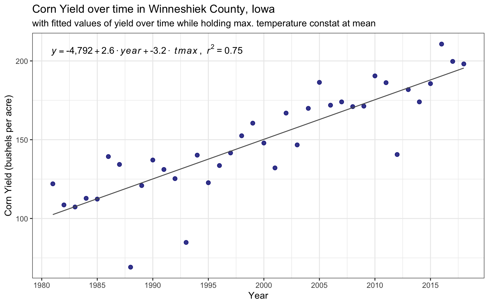
A multiple linear regression of corn yield on year and mean summer maximum temperature explains 75% of the variation in corn yields in Winneshiek County, Iowa. Using the anova() function to compare the model including year and temperature with the simple linear model including only year allows for us to test which model provides the best parsimonious fit of the data. The ANOVA test has a resulting p-value of 0.174. This result means that adding the mean summer maximum temperature did not significantly improve the model over the simple linear model on year alone.
7.0.3.3.3 Yields on Year & Temperature quadratic
## yield on temperature quadratic and year
winneshiek_yields_temp <- winneshiek_yields_temp %>%
mutate(meantmax_sq = meantmax^2)
lm_yield_year_tmax_sq <- lm(yield_corn_bu_acre ~ year_id + meantmax + meantmax_sq, data = winneshiek_yields_temp)
## summary(lm_yield_year_tmax_sq)
## compare models
anova_m1_m5 <- anova(lm_yield_yr, lm_yield_year_tmax_sq)
anova_m1_m5## Analysis of Variance Table
##
## Model 1: yield_corn_bu_acre ~ year_id
## Model 2: yield_corn_bu_acre ~ year_id + meantmax + meantmax_sq
## Res.Df RSS Df Sum of Sq F Pr(>F)
## 1 36 10752.3
## 2 34 6923.8 2 3828.5 9.4002 0.0005627 ***
## ---
## Signif. codes: 0 '***' 0.001 '**' 0.01 '*' 0.05 '.' 0.1 ' ' 1## linear function holding tmax constant at mean
lm_yield_year_tmax_sq_eq1 <- function(x){summary(lm_yield_year_tmax_sq)$coefficients["(Intercept)", "Estimate"] + (summary(lm_yield_year_tmax_sq)$coefficients[2, "Estimate"] * x) + (summary(lm_yield_year_tmax_sq)$coefficients[3, "Estimate"] * mean(winneshiek_yields_temp$meantmax)) + (summary(lm_yield_year_tmax_sq)$coefficients[4, "Estimate"] * mean(winneshiek_yields_temp$meantmax)^2)}
#label
model_label_yr_tmax_sq <- as.character(as.expression(
substitute(
italic(y) == a + b %.% italic(year) + c %.% ~italic(tmax) + d %.% ~italic(tmax)^2~","~~italic(r)^2~"="~r2
, list(
a = scales::comma(summary(lm_yield_year_tmax_sq)$coefficients["(Intercept)", "Estimate"], accuracy = 1)
, b = scales::comma(summary(lm_yield_year_tmax_sq)$coefficients[2, "Estimate"], accuracy = 0.2)
, c = scales::comma(summary(lm_yield_year_tmax_sq)$coefficients[3, "Estimate"], accuracy = 0.2)
, d = scales::comma(summary(lm_yield_year_tmax_sq)$coefficients[4, "Estimate"], accuracy = 0.2)
, r2 = format(summary(lm_yield_year_tmax_sq)$r.squared, digits = 2)
)
)
))
#plot
ggplot(winneshiek_yields_temp, aes(x = year_id, y = yield_corn_bu_acre)) +
geom_point(alpha=0.8, color = "navy", size = 2) +
stat_function(fun = lm_yield_year_tmax_sq_eq1
, geom="line"
, show.legend = FALSE
, color = "grey35"
) +
annotate(geom = "text", label = model_label_yr_tmax_sq, parse = TRUE, x = -Inf, y = Inf, hjust = -0.02, vjust = 2) +
scale_x_continuous(breaks = scales::extended_breaks(n=10)) +
labs(
title = "Corn Yield over time in Winneshiek County, Iowa"
, subtitle = "with fitted values of yield over time while holding max. temperature constat at mean"
) +
xlab("Year") +
ylab("Corn Yield (bushels per acre)") +
theme_bw() +
theme(
legend.position="none"
)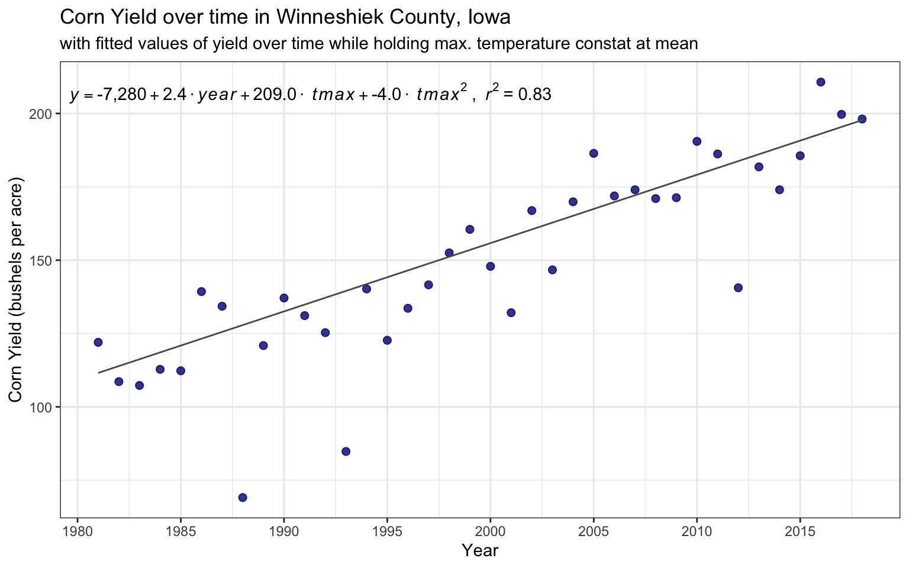
A multiple linear regression of corn yield on year and mean summer maximum temperature explains 83% of the variation in corn yields in Winneshiek County, Iowa. Using the anova() function to compare the model including year and temperature with the simple linear model including only year allows for us to test which model provides the best parsimonious fit of the data. The ANOVA test has a resulting p-value of 0.00056. This result means that adding the mean summer maximum temperature with a squared term did significantly improve the model over the simple linear model on year alone. Thus, of all of the models tested to estimate corn yields in Winneshiek County, Iowa, this model provides the best parsimonious fit of the data.
7.0.3.4 Question 3
Cross-Section: Analyze the relationship between temperature and yield across all counties in 2018. Is there a relationship? Interpret the results.
## summarize summer temperature data to county, year level
county_year_tmax <- tmaxdf %>%
mutate(county_ansi = as.numeric(as.character(countyfp))) %>%
filter(doy >= 152 & doy <= 243) %>%
group_by(county_ansi, year) %>%
summarize(meantmax = mean(tmax, na.rm = TRUE)) %>%
mutate(meantmax_sq = meantmax^2)
## join temp and yield data
county_yr_full <- inner_join(cornyields, county_year_tmax, by = c("county_ansi" = "county_ansi", "year_id" = "year"))
## lost a few records without matching temperature data
## nrow(cornyields) - nrow(county_yr_full)
county_yr_2018 <- county_yr_full %>%
filter(year_id==2018)
## models
lm_yield_tmax_2018 <- lm(yield_corn_bu_acre ~ meantmax, data = county_yr_2018)
lm_yield_tmax_sq_2018 <- lm(yield_corn_bu_acre ~ meantmax + meantmax_sq, data = county_yr_2018)
## summary(lm_yield_tmax_2018)
## compare models
anova_1_2 <- anova(lm_yield_tmax_2018, lm_yield_tmax_sq_2018)
anova_1_2## Analysis of Variance Table
##
## Model 1: yield_corn_bu_acre ~ meantmax
## Model 2: yield_corn_bu_acre ~ meantmax + meantmax_sq
## Res.Df RSS Df Sum of Sq F Pr(>F)
## 1 91 35087
## 2 90 31651 1 3436.7 9.7725 0.002385 **
## ---
## Signif. codes: 0 '***' 0.001 '**' 0.01 '*' 0.05 '.' 0.1 ' ' 1A simple linear regression of corn yield on mean summer maximum temperature for the counties in Iowa in 2018 explains 4% of the variation in corn yields. Adding a squared term for mean summer maximum temperature results in explaining 13% of the variation in corn yields for the counties in Iowa in 2018. We can also use the anova() function to compare the simple linear model to the quadratic model to test which model provides the best parsimonious fit of the data. The ANOVA test has a resulting p-value of 0.00239. This result means that adding the squared term for mean summer maximum temperature did significantly improve the model over the simple linear model. Thus, we will proceed with the quadratic model.
## save fitted values
county_yr_2018$fitted_quad <- lm_yield_tmax_sq_2018$fitted.values
#label
model_label_yr_tmax_sq <- as.character(as.expression(
substitute(
italic(y) == a + b %.% ~italic(tmax) + c %.% ~italic(tmax)^2~","~~italic(r)^2~"="~r2
, list(
a = scales::comma(summary(lm_yield_tmax_sq_2018)$coefficients["(Intercept)", "Estimate"], accuracy = 1)
, b = scales::comma(summary(lm_yield_tmax_sq_2018)$coefficients[2, "Estimate"], accuracy = 0.2)
, c = scales::comma(summary(lm_yield_tmax_sq_2018)$coefficients[3, "Estimate"], accuracy = 0.2)
, r2 = format(summary(lm_yield_tmax_sq_2018)$r.squared, digits = 2)
)
)
))
#plot
ggplot(county_yr_2018, aes(x = meantmax, y = yield_corn_bu_acre)) +
geom_point(alpha=0.8, color = "navy", size = 2) +
geom_line(aes(x = meantmax, y = fitted_quad), color = "grey35") +
annotate(geom = "text", label = model_label_yr_tmax_sq, parse = TRUE, x = -Inf, y = Inf, hjust = -0.05, vjust = 1) +
scale_x_continuous(breaks = scales::extended_breaks(n=10)) +
scale_y_continuous(expand = c(0.1, 1)) +
labs(
title = "2018 Corn Yield versus Mean Summer Max. Temperature for Counties of Iowa"
, subtitle = "with fitted values from quadratic temperature model (i.e., tmax + tmax^2)"
) +
xlab("Summer Max. Temp. (°C)") +
ylab("Corn Yield (bushels per acre)") +
theme_bw() +
theme(
legend.position="none"
)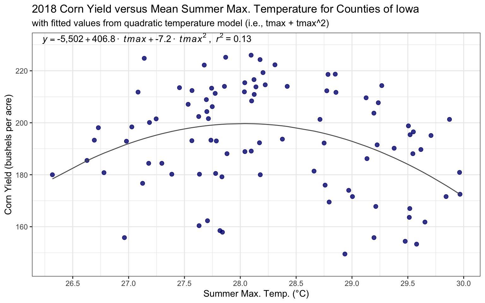
The model of corn yield on mean summer maximum temperature and its squared term for the counties in Iowa in 2018 explains 13% of the variation in corn yields. The trend shown above estimates a positive impact of temperature on corn yield with a maximum impact around 28 °C. After this point, increasing temperatures negatively impacts corn yields based on 2018 data for the counties in Iowa.
7.0.3.5 Question 4
Panel: One way to leverage multiple time series is to group all data into what is called a “panel” regression. Convert the county ID code (“countyfp” or “county_ansi”) into factor using as.factor, then include this variable in a regression using all counties’ yield and summer temperature data. How does the significance of your temperature coefficients (Tmax, Tmax^2) change? Make a plot comparing actual and fitted yields and interpret the results of your model.
7.0.3.5.1 Develop models
## make a factor of county code
county_yr_full <- county_yr_full %>%
mutate(
name_ansi = paste0(county_name, " (", as.character(county_ansi), ")")
, county_factor = as.factor(name_ansi)
)
## explore panel data
## coplot(yield_corn_bu_acre ~ year_id|county_factor, type="l", data=county_yr_full) ## Lines
## car::scatterplot(yield_corn_bu_acre~year_id|county_factor, data=county_yr_full, boxplots=FALSE, smooth=TRUE, reg.line=FALSE, legend=FALSE)
## gplots::plotmeans(yield_corn_bu_acre ~ county_factor, main="Heterogeineity across counties", data=county_yr_full, n.label=FALSE)
## gplots::plotmeans(yield_corn_bu_acre ~ year_id, main="Heterogeineity across years", data=county_yr_full, n.label=FALSE)
## model yield with panel data
## Regular OLS regression does not consider heterogeneity across groups or time
## need to add a factor to account for differences across groups
## yield on year
lm_pnl_yield_year <- lm(yield_corn_bu_acre ~ year_id + county_factor, data = county_yr_full)
## summary(lm_pnl_yield_year)
## yield on tmax
lm_pnl_yield_tmax <- lm(yield_corn_bu_acre ~ meantmax + county_factor, data = county_yr_full)
## summary(lm_pnl_yield_tmax)
## anova test
anv_m1_m2 <- anova(lm_pnl_yield_year, lm_pnl_yield_tmax)
## anv_m1_m2
## (anv_m1_m2[2, "Sum of Sq"]) ## decrease in RSS means that model fits worse
## yield on tmax quadratic
lm_pnl_yield_tmax_quad <- lm(yield_corn_bu_acre ~ meantmax + meantmax_sq + county_factor, data = county_yr_full)
## summary(lm_pnl_yield_tmax_quad)
## anova test
anv_m1_m3 <- anova(lm_pnl_yield_year, lm_pnl_yield_tmax_quad)
## anv_m1_m3
## (anv_m1_m3[2, "Sum of Sq"]) ## decrease in RSS means that model fits worse
## yield on full model
lm_pnl_yield_full <- lm(yield_corn_bu_acre ~ year_id + meantmax + meantmax_sq + county_factor, data = county_yr_full)
## summary(lm_pnl_yield_full)
## anova test
anv_m1_m4 <- anova(lm_pnl_yield_year, lm_pnl_yield_full)
anv_m1_m4## Analysis of Variance Table
##
## Model 1: yield_corn_bu_acre ~ year_id + county_factor
## Model 2: yield_corn_bu_acre ~ year_id + meantmax + meantmax_sq + county_factor
## Res.Df RSS Df Sum of Sq F Pr(>F)
## 1 3648 1716689
## 2 3646 1293407 2 423282 596.6 < 2.2e-16 ***
## ---
## Signif. codes: 0 '***' 0.001 '**' 0.01 '*' 0.05 '.' 0.1 ' ' 1Four models were compared above to determine the best fit model for corn yield in the counties of Iowa between 1981 and 2018 using fixed effects (OLS dummy variable) for county:
* simple linear model of corn yield on year (r-squared = 63%).
* simple linear model of corn yield on average maximum summer temperature (r-squared = 19%).
* quadratic model of corn yield on average maximum summer temperature and its square (r-squared = 26%).
* full model of corn yield on year and average maximum summer temperature and its square (r-squared = 72%).
Using the anova() function, fixed effects models were compared to test which model provides the best parsimonious fit of the data. The ANOVA test between the simple linear model of corn yield on year and the full model has a resulting p-value of 0. This result means that the full model significantly improved the estimate over the simple linear model. Thus, we will proceed with the full model.
7.0.3.5.2 Plot best model
## save predicted values for best model
county_yr_full$y_hat <- lm_pnl_yield_full$fitted.values
## car::scatterplot(y_hat~year_id|county_factor, data=county_yr_full, boxplots=FALSE, smooth=TRUE, reg.line=FALSE, legend=FALSE)
## plot y versus y_hat
#plot
ggplot(county_yr_full, aes(x = y_hat, y = yield_corn_bu_acre)) +
geom_point(alpha=0.7, color = "navy", size = 2) +
geom_abline(color = "grey35") +
annotate(geom = "text", label = "*line indicates perfect fit", x = -Inf, y = Inf, hjust = -0.05, vjust = 2, color = "grey35") +
scale_x_continuous(limits = c(min(county_yr_full$yield_corn_bu_acre)*.97 , max(county_yr_full$yield_corn_bu_acre)*1.02), breaks = scales::extended_breaks(n=10)) +
scale_y_continuous(limits = c(min(county_yr_full$yield_corn_bu_acre)*.97 , max(county_yr_full$yield_corn_bu_acre)*1.02), breaks = scales::extended_breaks(n=10)) +
labs(
title = "Corn Yield versus Predicted Corn Yield for Counties of Iowa"
, subtitle = "with predicted values from full model"
) +
xlab("Predicted Corn Yield (bushels per acre)") +
ylab("Corn Yield (bushels per acre)") +
theme_bw() +
theme(
legend.position="none"
)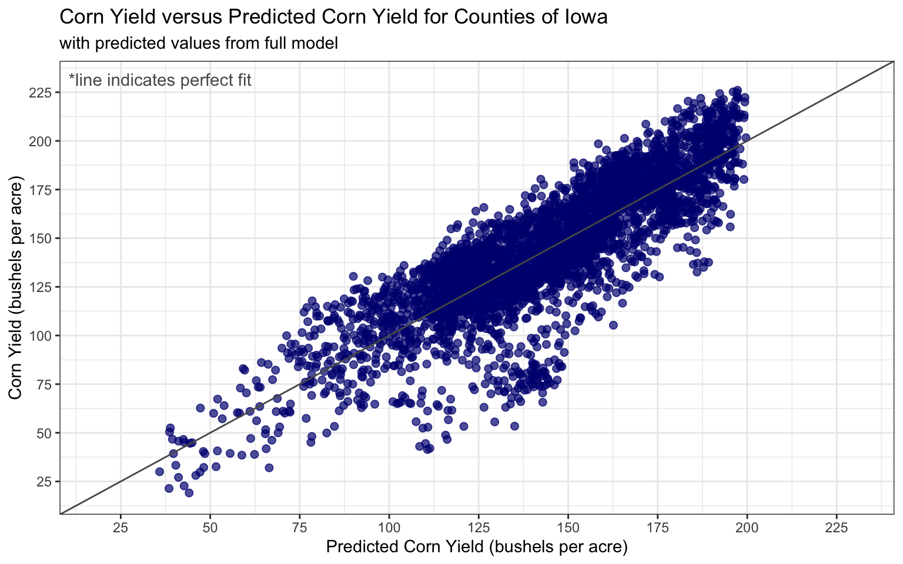
7.0.3.6 Question 5
Soybeans: Download NASS data on soybean yields and explore either a time series relationship for a given county, the cross-sectional relationship for a given year, or a panel across all counties and years.
7.0.3.6.1 Load data
## pull data on soybean yield from nassqs_yields
## parameters to query on
nassqs_auth(key = my_qs_api_key)
params <- list(commodity_desc = "SOYBEANS", year__GE = 1981, state_alpha = "IA")
## download
soybeanyieldsall <- nassqs_yields(params)
## clean and filter this dataset
soybeanyieldsall$county_ansi <- as.numeric(soybeanyieldsall$county_ansi)
soybeanyieldsall$yield <- as.numeric(soybeanyieldsall$Value)
soybeanyields <- soybeanyieldsall %>%
filter(
!is.na(county_ansi)
& !is.na(yield)
& util_practice_desc == "ALL UTILIZATION PRACTICES"
& prodn_practice_desc == "ALL PRODUCTION PRACTICES"
) %>%
select(county_ansi, county_name, yield, year)
soybeanyields <- tibble(soybeanyields) %>%
rename(year_id = year
, yield_soybean_bu_acre = yield ## bushels per acre
)7.0.3.6.2 Develop models
## model
## join with winneshiek corn data
winneshiek_yields <- winneshiek_yields %>%
inner_join(soybeanyields, by=c("year_id"="year_id", "county_ansi"="county_ansi")) %>%
select(-fitted_quad)
## trend model for yield growth
lm_yield_year <- lm(yield_soybean_bu_acre ~ year_id , data = winneshiek_yields)
## summary(lm_yield_year)
## quadratic trend model for yield growth
lm_yield_year_quad <- lm(yield_soybean_bu_acre ~ year_id + year_id_sq, data = winneshiek_yields)
## summary(lm_yield_year_quad)
#anova
anv_yr_yrsq <- anova(lm_yield_year, lm_yield_year_quad)
anv_yr_yrsq## Analysis of Variance Table
##
## Model 1: yield_soybean_bu_acre ~ year_id
## Model 2: yield_soybean_bu_acre ~ year_id + year_id_sq
## Res.Df RSS Df Sum of Sq F Pr(>F)
## 1 39 1200.1
## 2 38 1199.7 1 0.38414 0.0122 0.9127The anova() function was used to compare a simple linear model of soybean yield over time versus a quadratic time trend model to determine which model provides the best parsimonious fit of the data. The ANOVA test had a resulting p-value of 0.91. This result means that the quadratic time trend did not significantly improve the estimate over the simple linear model. Thus, we will proceed with the simple linear model.
7.0.3.6.3 Plot best model
## label model in ggplot
model_label <- as.character(as.expression(
substitute(
italic(y) == a + b %.% italic(year)*","~~italic(r)^2~"="~r2
, list(
a = scales::comma(summary(lm_yield_year)$coefficients["(Intercept)", "Estimate"], accuracy = 0.1)
, b = scales::comma(summary(lm_yield_year)$coefficients[2, "Estimate"], accuracy = 0.1)
, r2 = format(summary(lm_yield_year)$r.squared, digits = 2)
)
)
))
## model_label
## plot
ggplot(winneshiek_yields, aes(x = year_id, y = yield_soybean_bu_acre)) +
geom_point(alpha=0.9, color = "cadetblue", size = 2) +
geom_smooth(method = 'lm', color = "grey35") +
annotate(geom = "text", label = model_label, parse = TRUE, x = -Inf, y = Inf, hjust = -0.1, vjust = 2) +
scale_x_continuous(breaks = scales::extended_breaks(n=10)) +
labs(
title = "Soybean Yield over time in Winneshiek County, Iowa"
) +
xlab("Year") +
ylab("Soybean Yield (bushels per acre)") +
theme_bw() +
theme(
legend.position="none"
)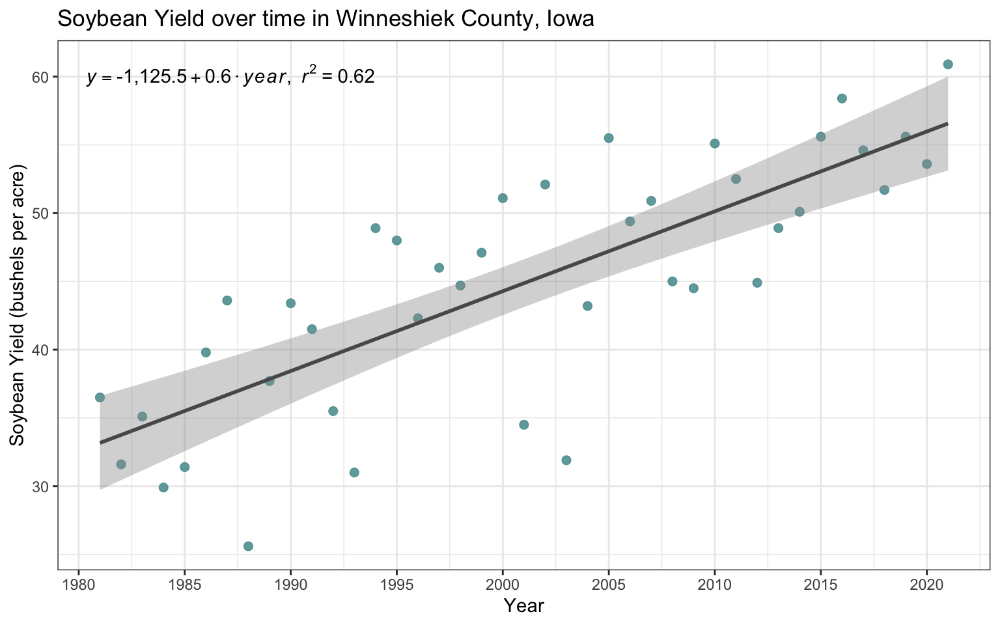
Similar to corn yeild, there is a significant time trend in the soybean yields in Winneshiek County, Iowa from 1981 to 2021. Based on a simple linear regression, every additional year results in the soybean yield increasing by 0.58 bu/acre. The annual time trend explains 62% of the variation in soybean yields in Winneshiek County, Iowa.
7.0.3.7 Bonus
Find a package to make a county map of Iowa displaying some sort of information about yields or weather. Interpret your map.
## pull in spatial county data to join on count FIPS code
counties <- us_counties() %>%
setNames(make.names(names(.), unique = TRUE)) %>% ## for some reason the state_name field is duplicated
mutate(county_ansi = as.numeric(countyfp)) %>%
filter(state_name == "Iowa") %>%
st_transform(2163) ## EPSG:2163 = US National Atlas Equal Area
## mapview(counties)
#aggregate yields to county
cornyields_sum <- cornyields %>%
group_by(county_ansi, county_name) %>%
arrange(county_ansi, year_id) %>%
summarize(
mean_yield_corn_bu_acre = mean(yield_corn_bu_acre, na.rm=TRUE)
, min_year = min(year_id, na.rm=TRUE)
, max_year = max(year_id, na.rm=TRUE)
, first_yield_corn_bu_acre = first(yield_corn_bu_acre)
, last_yield_corn_bu_acre = last(yield_corn_bu_acre)
) %>%
mutate(
yield_pct_chg = ((last_yield_corn_bu_acre - first_yield_corn_bu_acre) / first_yield_corn_bu_acre)*100
, n_years = max_year - min_year
)
## join to yields
spatial_county_yields <- inner_join(counties, cornyields_sum, by = "county_ansi")
## map options
mapviewOptions(legend.pos = "bottomright", homebutton.pos = "bottomleft")
lbl <- paste0("Avg. Corn Yield (bushels per acre) "
, as.character(min(spatial_county_yields$min_year))
,"-"
, as.character(max(spatial_county_yields$max_year))
)
## map
mapview(spatial_county_yields
, zcol = "mean_yield_corn_bu_acre"
, alpha.regions = 0.7
, map.types = "OpenStreetMap"
, label = c("namelsad")
, col.regions = mako(n = 7, direction = -1)
, at = seq(110, 170, 10)
, legend = TRUE
, layer.name = lbl
, popup = popupTable(
spatial_county_yields
, zcol = c(
"county_ansi"
, "namelsad"
, "mean_yield_corn_bu_acre"
)
, row.numbers = FALSE
, feature.id = FALSE
)
)In the time period examined, the northern counties in Iowa have had higher average outputs in corn per acre than southern counties. O’Brien County had the highest average yield at 160 bushels per acre while Clarke County had the lowest average at 112 bushels per acre.
7.0.3.8 Bonus #2
Challenge question - map trends in corn yields by county across Iowa. Interpret your map.
## use percent change to map
lbl2 <- paste0("% Change Corn Yield (bushels per acre) "
, as.character(min(spatial_county_yields$min_year))
,"-"
, as.character(max(spatial_county_yields$max_year))
)
## map
mapview(spatial_county_yields
, zcol = "yield_pct_chg"
, alpha.regions = 0.7
, map.types = "OpenStreetMap"
, label = c("namelsad")
, col.regions = mako(n = 7, direction = -1)
, at = seq(15, 140, 20)
, legend = TRUE
, layer.name = lbl2
, popup = popupTable(
spatial_county_yields
, zcol = c(
"county_ansi"
, "namelsad"
, "yield_pct_chg"
)
, row.numbers = FALSE
, feature.id = FALSE
)
)In the time period examined, the far western counties in Iowa have had the most significant increases in corn yield per acre. Crawford County had the highest corn yield increase of 132% while Hamilton County had the lowest corn yield increase of 18%.